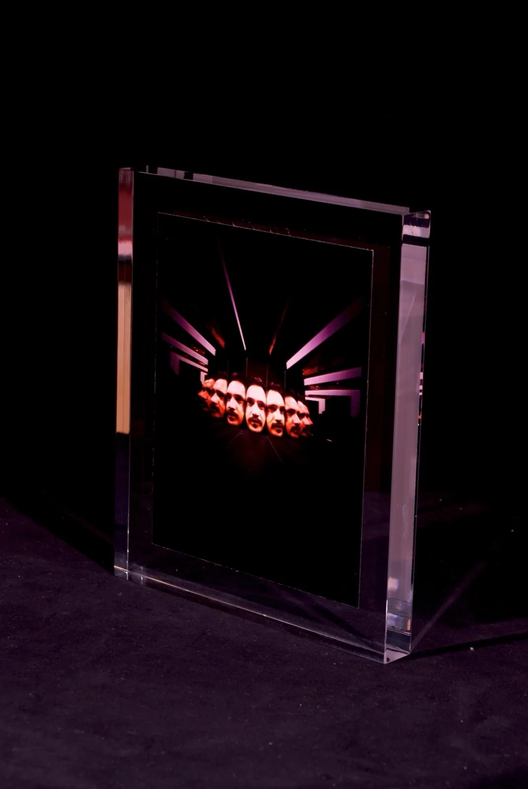
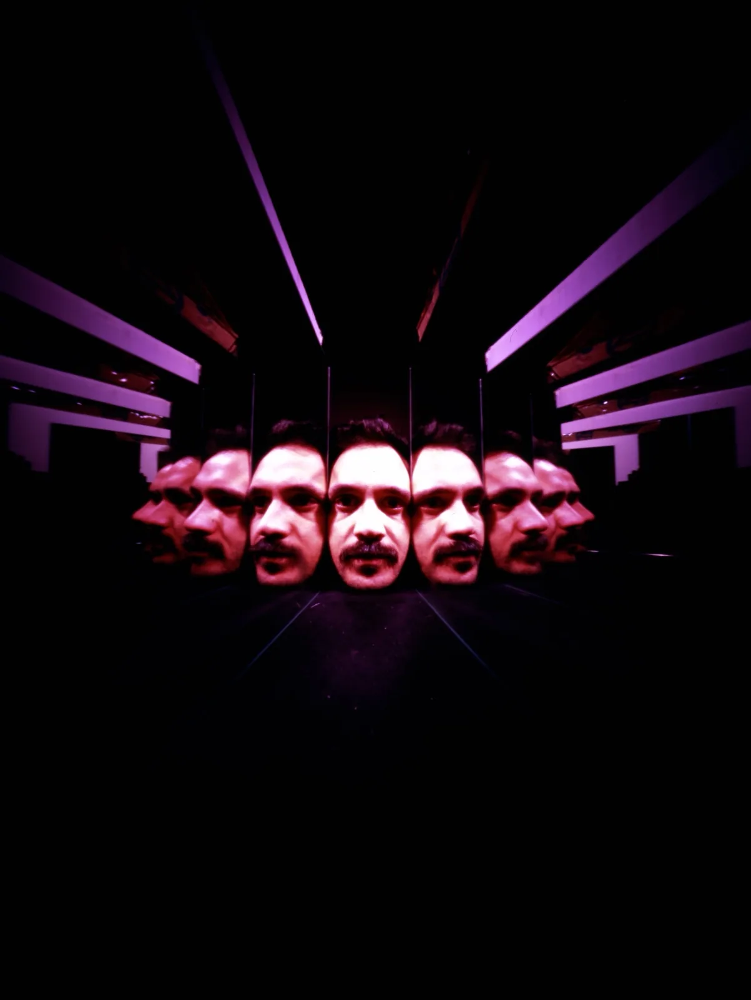
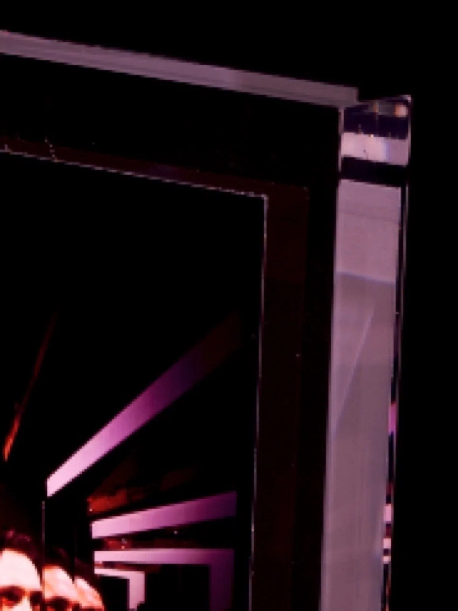
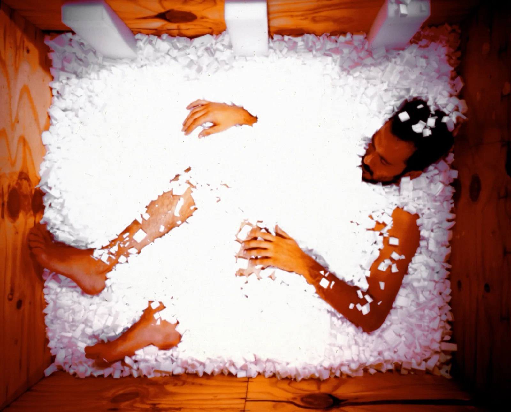

FotografiaPhotography
Seek Deep Inside… Remember What You Find 2006
Serie fotografica di 3, stampa fine art in monoblocco di plexiglass
Serie fotografica di 3, stampa fine art in monoblocco di plexiglass
Volti e mani moltiplicati in una camera rossa: un caleidoscopio teatrale in cui l'identità si replica fino a perdersi. Il titolo è un'istruzione: cerca in profondità — e ricorda quello che trovi.
Faces and hands multiplied inside a red room: a theatrical kaleidoscope where identity replicates itself until it is lost. The title is an instruction: seek deep inside — and remember what you find.



